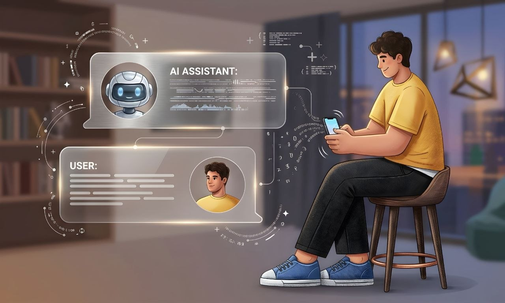
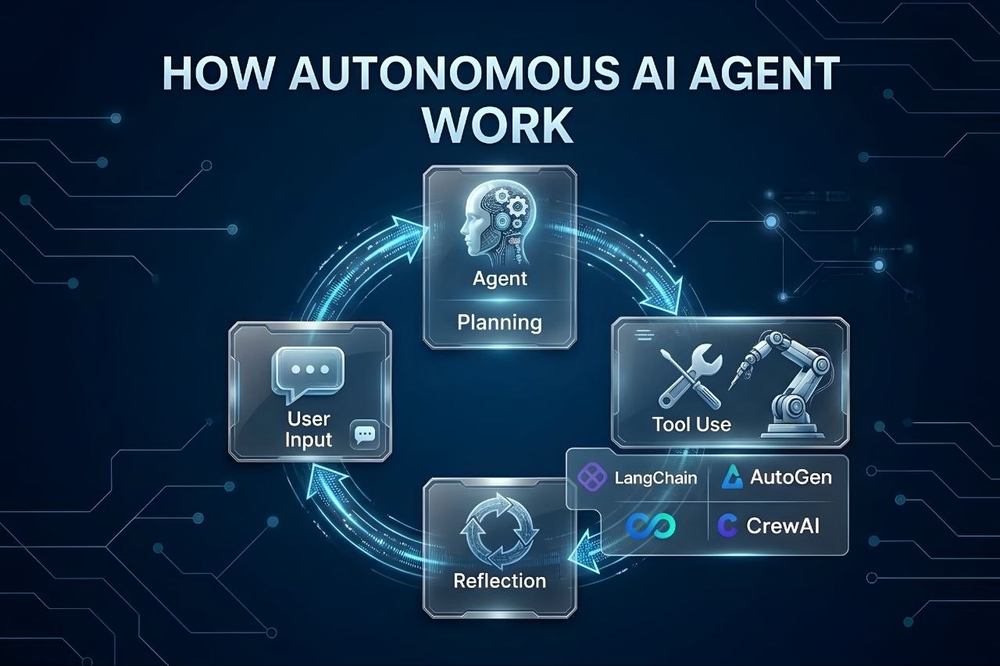
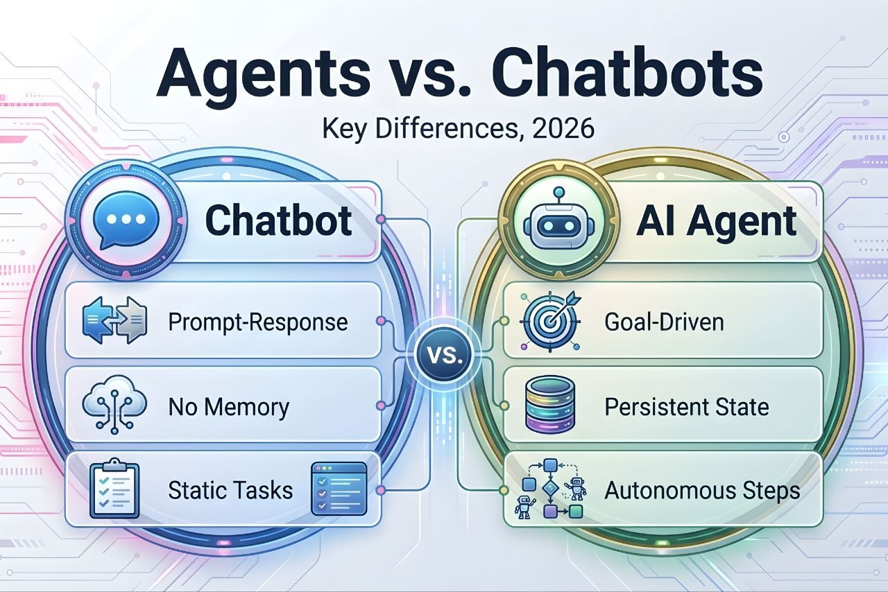
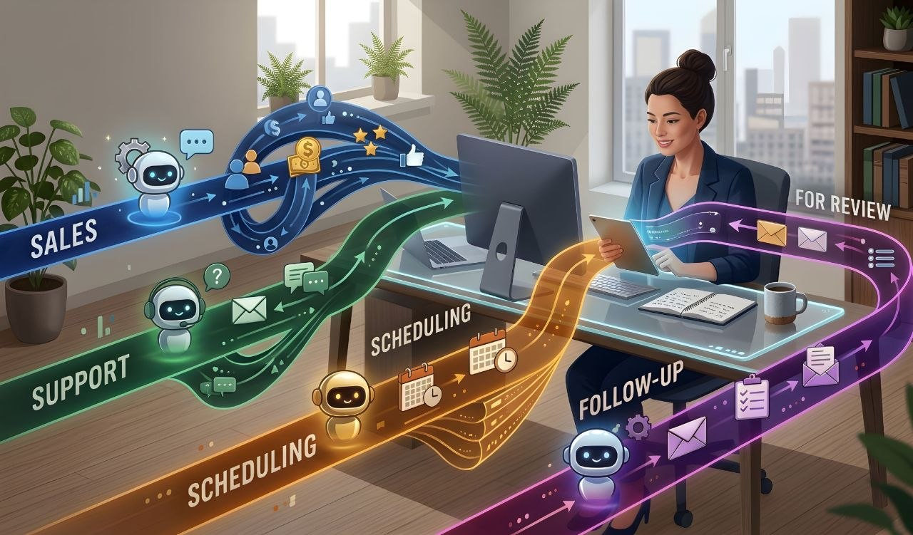
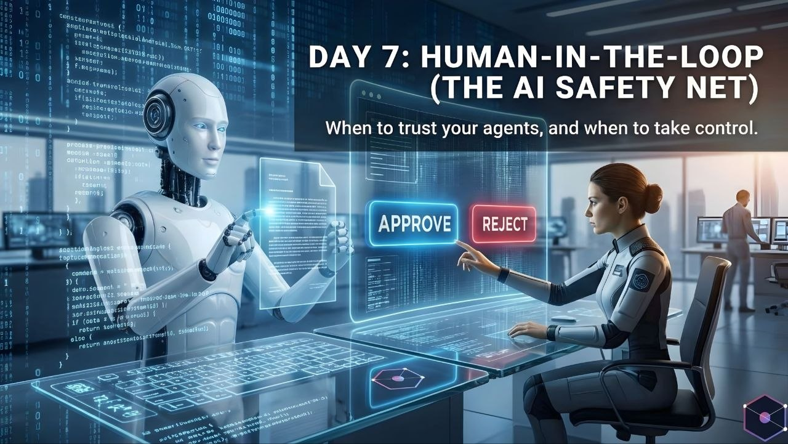

Have you ever asked an AI tool a question and received an answer in seconds? Maybe you asked it to explain a topic, write an email, or help you understand a piece of code. That is the kind of task people usually connect with an AI chatbot.
But what if you want AI to do more than answer? Imagine asking it to research a topic, compare information, use tools, complete several steps, and then show you the result. This is where AI agents come in.
AI chatbots and AI agents are related, but they are not exactly the same. Both can use artificial intelligence and language models. The main difference is how they handle a task. A chatbot mainly responds to a conversation, while an agent can work toward a goal by choosing steps and using tools.
In this guide, we will explain what AI chatbots and AI agents are, how they work, how they differ, where each one is useful, and what to consider before using them. We will also look at examples, limitations, safety, cost, and how to choose the right option.
1. What Is an AI Chatbot?
An AI chatbot is a software tool that communicates with people through text or voice. You send it a question or instruction, and it creates a response. Many modern chatbots use large language models (LLMs) to understand language and generate answers.
For example, you can ask a chatbot to explain what a database is, write a short message, translate a sentence, or help you understand an error in your code. It reads your message and responds based on the information available to it.
Most chatbots are designed around conversation. You ask something, the chatbot replies, and you can continue asking follow-up questions. Some chatbots can also search the web, read uploaded files, create images, or use other connected features. These extra abilities depend on the product.
A chatbot does not automatically become an AI agent just because it can answer questions well. The important point is whether it can plan and carry out a goal through actions, rather than only produce a response.
2. How Does an AI Chatbot Work?
An AI chatbot receives your message, processes the text, and generates a response. In a language-model-based chatbot, the model uses patterns learned during training along with the current conversation context to predict and produce useful text.
Imagine you ask, "Explain cloud storage in simple English." The chatbot processes your request, identifies the topic and the style you want, and then creates an explanation. If you ask a follow-up question, it can use the available conversation context to make its next answer more relevant.
A simple chatbot interaction usually follows these steps:
- You type or speak a question.
- The chatbot receives your message and available conversation context.
- The AI model processes the request.
- The chatbot generates a response.
- You can ask another question or give a new instruction.
Some chatbots can call external tools, but this depends on how the product is built. A chatbot that can search or run a specific action may still be designed mainly to respond to individual requests, rather than independently manage a longer task from beginning to end.

3. What Is an AI Agent?
An AI agent is a system that uses AI to work toward a goal. Instead of only replying to a message, it can decide what steps may be needed, use available tools, check the results, and continue working until it reaches a stopping point or needs help.
For example, imagine you ask an AI agent to prepare a comparison of three project-management tools. Depending on its permissions and connected tools, it may search for information, open relevant pages, collect details, organize the findings, and prepare a report.
The agent does not need you to explain every small step. It can choose steps based on the goal and the instructions it has received. However, it should still follow clear limits and ask for approval before taking important actions when required.
An AI agent is not a human worker and it does not understand the world in the same way a person does. It is a software system that makes decisions based on its model, instructions, available information, and tools.
4. How Does an AI Agent Work?
An AI agent usually works through a repeated process. It receives a goal, decides what to do next, takes an action, checks what happened, and then decides whether another step is needed.
For example, suppose you ask an agent to find the official documentation for a software library and summarize how to install it. A tool-enabled agent might search for the official website, open the documentation, find the installation instructions, and write a short summary.
A common agent workflow looks like this:
- Receive a goal: The agent gets a task and the rules it must follow.
- Understand the task: It identifies what result is needed and what information may be missing.
- Plan steps: It chooses a possible sequence of actions.
- Use tools: It may search, read files, call an API, or interact with an approved service.
- Check the result: It reviews the information or output returned by the tool.
- Continue or stop: It takes another step, asks for clarification, requests approval, or reports the result.
Not every agent uses the same design. Some follow a short, fixed workflow, while others can choose between several tools and paths. The amount of independence depends on the system's design and the permissions it receives.

5. AI Agents vs AI Chatbots: What Is the Difference?
The main difference is the way they handle work. An AI chatbot is generally built to communicate and answer requests. An AI agent is built to work toward a goal and may take several actions to complete it.
Think about asking for a travel plan. A chatbot may suggest places to visit and explain what you could do. An agent with suitable tools may also compare travel options, check available information, organize a schedule, and prepare a plan. Booking or paying should still require the correct permission and confirmation.
Here are the key differences:
Purpose
A chatbot mainly helps you through conversation. An agent is designed to complete a task or reach a defined goal, sometimes by performing multiple steps.
Actions
A basic chatbot mostly produces answers. An agent may use tools, access approved data, and perform actions such as creating a draft, updating a record, or running a workflow.
Planning
A chatbot usually responds to the current message. An agent may break a larger request into smaller tasks and decide which one to do next.
Human involvement
People guide a chatbot through conversation. An agent may handle more steps on its own, but important actions should have clear approval rules and human oversight.
Complexity
A simple chatbot can be relatively easy to build. An agent that uses several tools, manages state, checks results, and handles errors usually needs more planning and testing.
6. AI Agents vs AI Chatbots: Quick Comparison
This table gives a simple overview. Real products can combine chatbot and agent features, so the exact behavior depends on how each system is designed.
| Feature | AI Chatbot | AI Agent |
|---|---|---|
| Main purpose | Answer questions and communicate | Work toward a goal |
| Typical workflow | Message and response | Plan, act, check, and continue |
| Tool use | May have selected tools | Often uses tools as part of a task |
| Task length | Often short or conversation-based | Can involve several connected steps |
| Independence | Usually responds when prompted | May choose and perform next steps |
| Human control | User guides the conversation | Needs defined permissions and oversight |
| Setup | Can be simpler | Can require more tools and safeguards |
| Good for | Explanations, writing, support, and Q&A | Research workflows, task automation, and multi-step work |
There is no strict wall between the two. A chatbot can include agent-like features, and an agent can communicate through a chat interface. The label alone does not tell you exactly what a product can do. Always check its actual features and permissions.

7. What Are Some Real Examples of AI Agents and AI Chatbots?
The easiest way to understand the difference is to look at everyday examples. These examples describe common types of systems, not a claim that every product with these names works in the same way.
Examples of chatbot tasks
- Explaining a difficult topic in simple language.
- Answering customer questions about a service.
- Helping someone write an email or social media caption.
- Translating text from one language to another.
- Explaining code and suggesting ways to fix an error.
Examples of agent tasks
- Collecting information from approved sources and preparing a report.
- Reading incoming support requests, sorting them, and preparing replies for review.
- Checking a project's task list and creating a progress summary.
- Running a scheduled data-processing workflow and reporting errors.
- Searching a product catalogue and preparing a shortlist based on set rules.
Notice that an agent task often includes several connected actions. The system needs access to the right tools and data, and it must be tested to make sure it does not take actions outside the task's limits.
8. How Do AI Agents Use Tools and APIs?
Tools are one of the important parts of many AI agents. A tool gives the AI system a way to interact with something outside the language model itself.
For example, a search tool can find information, a calculator can perform exact calculations, and a calendar API can read or create events if the user has granted permission. A database tool may let an agent look up or update approved records.
An API, or Application Programming Interface, is a way for software systems to communicate. It defines how one program can request information or ask another program to perform an action.
A typical tool-use process works like this:
- The agent identifies that it needs information or an action.
- It selects an available tool that matches the task.
- It sends the tool the required input.
- The tool returns a result or an error.
- The agent uses that result to decide what to do next.
Tool access must be limited carefully. An agent that only needs to read a calendar should not automatically receive permission to delete events or send messages. Give it only the access needed for its job.
9. Do AI Agents and Chatbots Have Memory?
Some AI chatbots and agents can use memory, but the word "memory" can mean different things. It may refer to the current conversation, saved user preferences, or information stored by an application for later tasks.
Conversation context
The system may use earlier messages in the same conversation to understand follow-up questions. For example, if you first ask about a laptop and then ask, "What about its battery?", the chatbot can use the earlier message to understand what "it" means.
Saved information
Some systems can store selected details, such as a user's preferred writing style or a project's settings. This depends on the product and its privacy controls. Not every chatbot saves information between conversations.
Agent task state
An agent may need to remember which steps it has completed, what information it collected, and what remains to be done. This task state can help it continue a workflow, but it is not the same as human memory.
Before using a system with memory, check what it stores, how long it keeps the information, whether you can review or delete it, and whether the data may be used by connected services.
10. What Are Multi-Agent Systems?
A multi-agent system uses more than one AI agent to work on a task or a group of related tasks. Each agent may have a different role, tool set, or area of focus.
For example, a research workflow might use one agent to find sources, another to organize the information, and a third to review the draft for missing details. A separate controller or workflow may coordinate the steps and combine the results.
Using multiple agents does not automatically make a system better. Agents can repeat work, misunderstand each other's results, or pass incorrect information between steps. A multi-agent setup also adds more complexity, testing, and cost.
For a small task, one well-designed agent or even a normal chatbot may be enough. Multiple agents are more useful when the work can be divided into clear roles and the overall process benefits from that separation.
11. How Are AI Agents and Chatbots Used in Business?
Businesses can use both technologies, but they often solve different problems. A chatbot can help people get information quickly, while an agent can help move a process through several steps.
Customer support
A chatbot can answer common questions about opening hours, product details, delivery policies, or account instructions. An agent may help classify a support request, look up an order through an approved system, and prepare a response for a support worker to review.
Sales and customer communication
A chatbot can answer questions from potential customers. An agent may organize incoming enquiries, add permitted details to a customer-management system, or prepare a follow-up draft. Sending messages should follow the company's consent and approval rules.
Office and administration
A chatbot can explain internal policies or help staff find information. An agent may collect approved data from several systems and prepare a report, meeting summary, or task update.
Software and IT operations
A chatbot can explain technical steps or help staff understand an error. An agent may check logs, run approved diagnostic commands, or create an issue for a human engineer to inspect.
Businesses should start with a clear, limited workflow. They should measure accuracy, time saved, error rates, and the amount of human review needed before giving a system more responsibility.

12. How Can Developers Use AI Agents and Chatbots?
Developers can use chatbots as coding assistants and agents for selected development workflows. The best choice depends on the task and the level of access the tool receives.
Using a chatbot for programming
- Explaining programming concepts and code examples.
- Helping understand error messages.
- Suggesting ways to improve a function.
- Writing sample tests or documentation.
- Comparing different technical approaches.
Using an agent for development tasks
- Inspecting a codebase and identifying files related to a task.
- Preparing code changes across several files.
- Running approved tests and reporting failures.
- Updating documentation after a change.
- Creating a draft pull request for a developer to review.
Agent access to a repository, terminal, deployment system, or production database creates real risks. Review code changes, protect secrets, use version control, and require human approval for important operations. Never assume generated code is correct just because the agent says a task is complete.
13. Which One Is Better for Everyday Tasks?
For many everyday questions, a chatbot is the simpler choice. You can ask for an explanation, a recipe idea, a translation, a study plan, or help writing a message without setting up a complex workflow.
An agent may be more useful when a task needs several steps and access to other tools. For example, collecting information from a set of documents, organizing it into a spreadsheet, and preparing a summary may be suitable for an agent-enabled workflow.
However, a task does not need an agent just because it has more than one step. If you can complete it easily by asking a chatbot a few questions, a chatbot may be enough. Use the simplest tool that can complete the work safely and accurately.
14. What Are the Benefits of AI Agents?
AI agents can be useful when a process involves repeated steps, clear rules, and tools that the system is allowed to use. Their main benefits can include:
- Multi-step work: An agent can handle several connected actions as part of one goal.
- Tool access: It can use approved software, APIs, and data sources.
- Less manual repetition: It may reduce repeated work in a well-defined process.
- Consistent workflows: It can follow the same rules and steps each time, when properly configured.
- Task monitoring: Some systems can check results and report when a step fails or needs human help.
These benefits are not guaranteed. A poorly designed agent can make mistakes faster or create extra work for people who must correct its output. Testing and monitoring are part of using agents responsibly.
15. What Are the Limitations of AI Agents and Chatbots?
Both chatbots and agents can make mistakes. They may misunderstand instructions, use incomplete information, or produce an answer that sounds confident but is wrong.
Incorrect information
Language models can generate inaccurate details. Important facts should be checked against reliable sources, especially for legal, medical, financial, or safety-related decisions.
Limited context
A system may not have access to every file, message, or detail needed for a task. It can also lose track of information when a conversation or workflow becomes very long.
Tool and connection errors
An agent may fail if an API is unavailable, a login expires, a website changes, or a tool returns unexpected data. It needs a safe way to stop and report the problem.
Unclear instructions
If a request is vague, the system may choose the wrong approach. Clear goals, boundaries, and examples can reduce this problem.
Extra complexity
Agents need more than a language model. They may require tool connections, permissions, workflow logic, logging, testing, and ongoing maintenance.
For these reasons, AI output should be treated as assistance rather than automatic proof that a task has been completed correctly.
16. Are AI Agents Safe to Use?
AI agents can be useful, but their ability to take actions means they need careful controls. A chatbot that gives a wrong answer can mislead you. An agent with broad permissions may also change data, send a message, or trigger an operation.
One risk is prompt injection. This can happen when an AI system reads untrusted content that contains instructions designed to influence its behavior. For example, a webpage or document might contain text telling the agent to ignore its rules or reveal private information. The agent should treat external content as data, not as trusted instructions.
How to use agents more safely
- Give the agent only the permissions it needs.
- Require approval before sending messages, spending money, deleting data, or making public changes.
- Keep passwords, API keys, and private information out of prompts unless the system is designed to handle them securely.
- Use test environments before allowing changes to live systems.
- Keep logs so actions can be reviewed.
- Set limits on the tools, data, time, and number of actions an agent can use.
- Check important results before relying on them.
There is no single safety setting that makes every agent safe. The right controls depend on what the agent can access and what it is allowed to do.

17. Do AI Agents Cost More Than Chatbots?
They can, but not in every case. The cost depends on the AI model, how often it is used, how many steps it takes, which tools it calls, and whether extra software or infrastructure is required.
A simple chatbot may send one request to a model and return one answer. An agent may make several model calls, search for information, read documents, call APIs, and check its work. Those extra steps can increase usage and operating costs.
There may also be costs for hosting, databases, monitoring, external services, and development. Some platforms charge based on usage, while others offer fixed plans or different pricing models. Always check the current pricing and limits of the specific product before choosing it.
A good way to control cost is to use the smallest workflow that can do the job. Do not add multiple agents or expensive tools when a simple chatbot or fixed automation can solve the problem.
18. Which One Should You Choose?
The right choice depends on what you want the AI system to do. Start with the result you need, not with the most advanced-sounding technology.
| Your Need | A Suitable Starting Point |
|---|---|
| Ask questions and get explanations | AI chatbot |
| Write, rewrite, or translate text | AI chatbot |
| Get help understanding code | AI chatbot |
| Answer common customer questions | Chatbot or support assistant |
| Collect information from several approved sources | AI agent or guided workflow |
| Complete a repeated process using connected tools | AI agent or automation |
| Update records after checking rules and permissions | Controlled agent workflow |
| Perform sensitive actions | Human-led process with approval; use AI only with strict controls |
If you are not sure, begin with a chatbot. If you later find that the same task requires many repeated steps and tool actions, consider whether an agent can handle that workflow safely.
19. What Should You Check Before Using an AI Agent or Chatbot?
Before choosing a tool, think about the work it will do and the information it will access. These questions can help you make a better decision:
- What result do I need? Be clear about the task and what a successful result looks like.
- Does it need to take action? If you only need answers, a chatbot may be enough.
- Which tools can it access? Check whether it connects to the websites, files, or applications you need.
- What permissions does it receive? Avoid giving broad access when limited access will work.
- Can I review its work? Make sure you can check results before important actions happen.
- How does it handle errors? It should stop safely and explain when it cannot complete a step.
- What will it cost? Consider model usage, tool calls, hosting, and maintenance.
- How is my data handled? Read the provider's privacy and data-retention information.
20. What Is the Future of AI Agents and Chatbots?
AI chatbots are becoming more capable, and many can already work with files, images, voice, search, and connected tools. At the same time, agent systems are being developed to handle longer workflows and interact with more software.
This means the difference between chatbots and agents may become less obvious in some products. A single assistant may answer a question in one moment and carry out a multi-step task in another.
However, more capability also creates more responsibility. Reliable systems will need clear permissions, good error handling, privacy protection, human review, and ways to check what actions were taken.
The most useful AI system will not always be the one that can do the most things. It will be the one that solves the right problem in a reliable, understandable, and safe way.
21. Frequently Asked Questions
Are AI agents and AI chatbots the same?
No. A chatbot mainly communicates and responds to prompts. An AI agent can work toward a goal by planning steps and using tools. Some products combine both types of features.
Can an AI chatbot become an AI agent?
A chatbot-based system can be extended with planning, tools, memory or task state, and action controls. Whether it should be called an agent depends on how it works and how much of the task it can carry out.
Does every AI agent use ChatGPT?
No. An AI agent can use different language models or other AI systems. The model choice depends on the product, task, cost, speed, and technical requirements.
Can an AI agent work without human help?
Some agents can complete limited tasks without asking for help at every step. However, they still need instructions, permissions, and monitoring. Sensitive or high-impact actions should have human approval.
Can AI agents browse the internet?
Some agents can browse the internet if they have an approved browser or search tool. Others cannot. Internet access depends on the system and its permissions.
Are AI agents better than chatbots?
Not for every task. Chatbots are often better for quick questions and conversation. Agents can be more useful for multi-step work that needs tools and actions. The better option depends on your goal.
Do AI agents need an internet connection?
Many agents use online models, websites, or cloud services and therefore need an internet connection. Some systems can run locally, but their features depend on the hardware and software installed.
Can AI agents make mistakes?
Yes. They can misunderstand instructions, use incorrect information, choose the wrong tool, or fail during a workflow. Important actions and results should be checked.
Are AI agents expensive to build?
Costs vary. A small agent with one or two tools may be relatively simple, while a reliable system connected to business software can require more development, testing, hosting, and maintenance.
Should a small business use an AI agent?
It may be useful when the business has a repeated process with clear rules. Start with a small task, measure the results, and keep a person involved in important decisions.
Our Final Recommendation
AI chatbots and AI agents are both useful, but they are designed for different levels of work. A chatbot is a good choice when you need answers, explanations, writing help, or a conversation. An agent is worth considering when a task needs several steps, connected tools, and controlled actions.
- Choose an AI chatbot for questions, learning, writing, translation, and everyday assistance.
- Choose an AI agent for well-defined tasks that need planning and multiple tool actions.
- Use a controlled agent workflow when it needs access to business data or software.
- Keep human approval for sensitive actions such as payments, deletion, public posting, or sending important messages.
You do not need an AI agent for every task. In many cases, a chatbot is simpler, faster, and easier to control. Start with the tool that meets your needs, then add more automation only when there is a clear reason.
Final Thoughts
The difference between an AI chatbot and an AI agent becomes easier to understand when you look at what each one does. A chatbot mainly helps through conversation, while an agent can use tools and take a series of steps toward a goal.
Both can save time when used for the right work. But neither should be trusted blindly. Check important information, protect your data, limit permissions, and review actions that could affect people, money, or business systems.
Choose based on the task, not the name. A simple chatbot may be all you need, while a carefully controlled agent can help with work that would otherwise require many repeated steps.